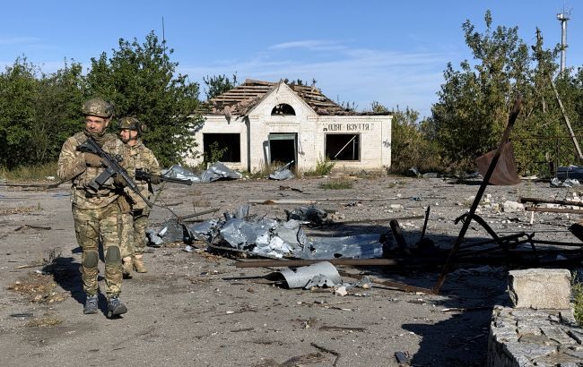
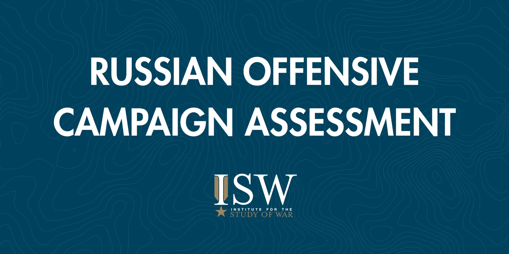
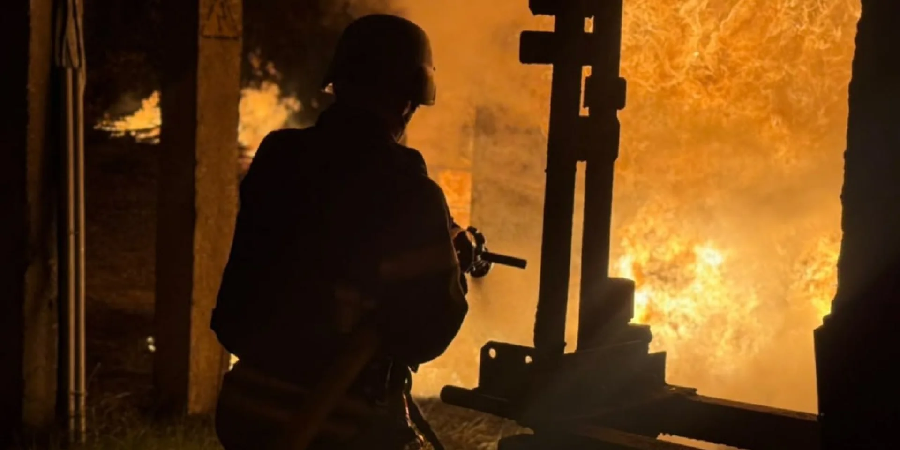
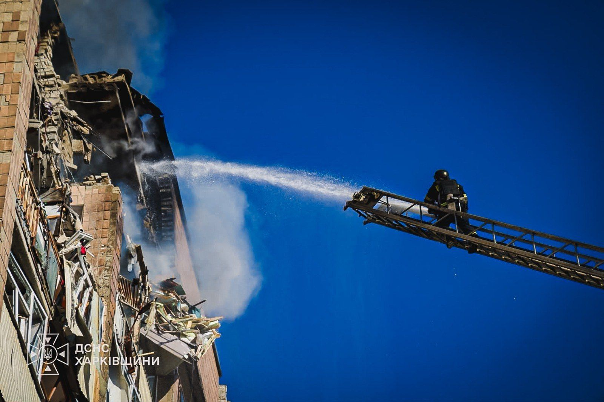

← Back to front pageUKRAINE WARUkraine-Russia War
13 digest(s) · newest first

Date saved: 2026-10-23 03:00 (PDT)
Sources: RBC-Ukraine, BBC, Institute for the Study of War, Global Security, Understanding War, Zelenskyy Office, Ukrenergo, DTEK
Key findings
Russian losses and the stabilized front
- RBC-Ukraine (Oct 21, 2026): Russia's total combat losses from February 24, 2022 to October 20, 2026: nearly 1,568,720 personnel (+1,560 in the most recent period), 12,425 tanks, 25,570 armored fighting vehicles, 51,359 artillery systems, 571,572 UAVs, 449 aircraft, 356 helicopters, 5,138 cruise missiles, 35 warships and boats, 2 submarines. (Source)
- BBC (2026): Ukraine's former commander-in-chief General Syrskyi said Ukraine has "broken Russia's ability to advance" by killing so many of its men; Moscow's overall losses were six times higher than Ukraine's, and if you count only dead, up to 11 times; UK intelligence chiefs estimate Russia has lost around half a million men killed since the full-scale invasion in 2022; in the first six months of 2026, Russia managed to seize only 61 sq km, an indication that the front line has been stabilized; in September 2026, Moscow lost more territory than it took. (Source)
Energy infrastructure strikes and civilian impact
- ISW, Russian Offensive Campaign Assessment (Oct 19, 2026): Devastating Russian drone and missile strikes on the night of October 18 to 19 heavily damaged energy and civilian infrastructure across Ukraine, killing at least four and wounding at least 55; Russia launched 16 ballistic missiles and over 200 drones primarily against Kyiv; strikes on energy infrastructure caused power outages for approximately 550,000 households in 15 oblasts; Ukrainian Prime Minister Serhiy Koretsky stated that Russia has conducted daily strikes against Ukrainian energy infrastructure since mid-July 2026, totaling 2,147 strikes against Ukrainian energy facilities since July 16. (Source)
- ISW (Russian Offensive Campaign Assessment (Oct 16, 2026): Ukrainian forces struck Russian energy infrastructure in the Khanty-Mansi Autonomous Okrug on October 16) the first reported Ukrainian strike against the region; a Ukrainian drone strike started a fire at Gazprom's Chernomyrdin Condensate Stabilization Plant near Surgut, roughly 2,340 kilometers from Russia's international border with Ukraine; Russian drone strikes caused large-scale power outages across Ukraine overnight on October 15 to 16, with 270,000 customers without electricity in Volyn and 280,000 in Kharkiv. (Source)
Ukraine's deep-strike campaign
- Global Security (Jun 2026): Ukraine continued to press the 40-day intermediate- and long-range strike campaign authorized by President Zelensky on June 25, with deep-strike operations against Russian logistics, refining, and energy infrastructure compounding country-wide Russian gasoline shortages and forcing Moscow to weigh fuel imports; Ukraine's long-range strike campaign reached Russian gas-processing infrastructure in Orenburg Oblast. (Source)
Russian offensive operations
- ISW (Oct 16, 2026): Russian forces have seized about 100 square kilometers and 69 settlements since January 1, 2026, and suffered a net loss of 122 square kilometers since September 1, 2026; Russian forces are conducting intense offensive operations and constant drone, aviation, and artillery strikes near Pokrovsk, with Ukrainian forces destroying between 40 and 50 Russian servicemembers daily during such assaults. (Source)
 ▶Watch the video on YouTube
▶Watch the video on YouTube ▶Watch the video on YouTube
▶Watch the video on YouTubeThe Russia-Ukraine war has entered a phase that Ukrainian military leadership describes as a stabilization of the front line (not a ceasefire, not a negotiation, but a grinding attritional deadlock in which Russia is taking ground at a dramatically slower rate than in previous years while continuing to inflict catastrophic damage on Ukraine's energy infrastructure and civilian population. The numbers that frame it: Russia's total combat losses since February 24, 2022, stand at nearly 1,568,720 personnel as of October 20, 2026. Ukraine's former commander-in-chief, General Valerii Syrskyi, told the BBC that Moscow's overall losses were six times higher than Ukraine's) and if you count only the dead, up to 11 times. In the first six months of 2026, Russia managed to seize only 61 square kilometers.
The civilians are bearing the cost of the continued long-range strike campaign. On the night of October 18 to 19, Russia launched 16 ballistic missiles and over 200 drones primarily against Kyiv, damaging residential, critical, and transportation infrastructure; strikes on energy infrastructure caused power outages for approximately 550,000 households in 15 oblasts. Since mid-July 2026, Russia has conducted 2,147 strikes against Ukrainian energy facilities. The throughline is that the front line has largely stopped moving, but the war has not stopped (it has shifted into a campaign of infrastructure destruction and energy deprivation aimed at degrading Ukrainian society's capacity to sustain the war. What to watch next is whether Ukraine's deep-strike campaign against Russian energy infrastructure), which has now reached the Khanty-Mansi Autonomous Okrug, over 2,300 kilometers from the border, begins to produce fuel shortages significant enough to affect Russian domestic politics, and whether the U.S.-led peace talks produce anything more than a pause in the diplomatic calendar.
Source links

Date saved: 2026-10-22 18:00 (PDT)
Sources: Institute for the Study of War, Kyiv Independent, UATV English, Hindustan Times, ET Now, Military Mind
Key findings
Russian energy strikes on Ukraine, October 18-19
- On the night of October 18-19, Russia launched an unspecified number of Iskander-M and S-400 ballistic missiles, Iskander-K cruise missiles, and 269 strike drones (including 59 jet-powered) and decoy drones against Ukraine; strikes heavily damaged energy and civilian infrastructure, killing at least four people and wounding at least 55. (Source)
- Zelensky reported that Russian forces struck 28 substations and other energy infrastructure objects in Vinnytsia, Volyn, Kirovohrad, Kyiv, Mykolaiv, Zhytomyr, Khmelnytskyi, Kharkiv, Ternopil, Odesa, and Rivne oblasts, causing power outages for approximately 550,000 households in 15 oblasts; Ukrenergo confirmed power outages in 10 regions, and rolling blackouts were imposed in some areas. (Source)
- Since mid-July 2026, Russia has conducted daily strikes against Ukrainian energy infrastructure, totaling 2,147 strikes against Ukrainian energy facilities since July 16; in the week before October 20, Russia launched nearly 2,700 strike drones, 1,700 guided aerial bombs, and 66 missiles at Ukraine. (Source)
Ukrainian long-range strikes back into Russia
- On October 17-18, Ukrainian forces conducted their largest strike against Russian digital, energy, and logistics infrastructure in St. Petersburg since 2022, significantly damaging a VKontakte (VK) social media platform data center, the Vostochnaya 330 kV substation next to it (leaving around 20,000 people without power), the St. Petersburg Oil Terminal, and an Ozon marketplace warehouse that caused a large fire. (Source)
- On October 16, Ukrainian forces struck a production and warehouse building at the Russian drone manufacturer Roboavia enterprise near Lenina, Rostov Oblast (roughly 230 kilometers from the frontline) and a warehouse building of a Russian missile brigade's logistics support unit near Latishi, Bryansk Oblast. (Source)
- On October 15, Ukraine resumed strikes on Russian oil infrastructure, hitting the Ryazan oil refinery after Zelensky announced the resumption; a fire broke out at the refinery, and a warehouse and several vehicles were damaged at another industrial facility in Ryazan. (Source)
Civilian toll and the energy truce breakdown
- At least four people were killed and 55 others injured across Ukraine over the October 18-19 day; Russian strikes damaged two four-story apartment buildings and a school in Zaporizhzhia City, killing at least one civilian and injuring at least two. (Source)
- Ukrainian First Deputy Energy Minister Artem Nekrasov said Russian strikes hit energy facilities in seven regions overnight on October 20-21, leaving some consumers without electricity; nationwide industrial power restrictions were announced to prevent damaged equipment from becoming overloaded. (Source)
- Moscow is trying to leave Ukrainians without electricity and heat ahead of winter; Zelensky stated that 76 strikes on Ukraine's energy infrastructure were recorded in one week, exactly as many attacks as happened after Trump announced an energy truce. (Source)
 ▶Watch the video on YouTube
▶Watch the video on YouTube ▶Watch the video on YouTube
▶Watch the video on YouTubeThe energy war has become the defining feature of the Russia-Ukraine conflict in October 2026, and it is being fought on both sides of the border at once. Russia has conducted daily strikes against Ukrainian energy infrastructure since mid-July 2026 (a total of 2,147 strikes against Ukrainian energy facilities since July 16, according to Ukrainian Prime Minister Serhiy Koretsky) and the October 18-19 night was one of the heaviest of the war: Russia launched 16 ballistic missiles and more than 200 drones primarily against Kyiv City and Kyiv Oblast, damaging residential, critical, and transportation infrastructure, and struck 28 substations and other energy infrastructure objects across ten oblasts, causing power outages for approximately 550,000 households in 15 oblasts. On October 17, Russian forces struck energy facilities in ten regions simultaneously, and Zelensky stated that in just one week Russia launched nearly 2,700 strike drones, 1,700 guided aerial bombs, and 66 missiles at Ukraine, with the main target being energy infrastructure.
The Ukrainian response has been to escalate its own long-range campaign back into Russia after a brief pause. On October 17-18, Ukrainian forces conducted their largest strike against Russian digital, energy, and logistics infrastructure in St. Petersburg since 2022, significantly damaging a VKontakte (VK) social media platform data center, the St. Petersburg Oil Terminal, and an Ozon marketplace warehouse; on October 16, Ukrainian forces struck a production and warehouse building at the Russian drone manufacturer Roboavia enterprise near Rostov Oblast, roughly 230 kilometers from the frontline. On October 15, Ukraine resumed strikes on Russian oil infrastructure, hitting the Ryazan oil refinery after Zelensky announced that strikes on Russian refineries would resume following a three-day pause requested by the United States. The energy truce is not holding, and Moscow is trying to leave Ukrainians without electricity and heat ahead of winter.
Source links
Date saved: 2026-10-22 03:00 (PDT)
Sources: Kyiv Independent, ISW, Critical Threats, Al Jazeera, OSW, ABC News, NV, BBC News Ukrainian, Understanding War
Key findings
Russia's energy infrastructure campaign: 2,147 strikes since July 16
- Kyiv Independent (Oct 19, 2026): Russian attacks struck 28 substations and other critical energy facilities across Ukraine. At least 550,000 households lost power overnight. Russian forces targeted energy infrastructure in 11 oblasts overnight and on the morning of October 19. One energy worker was injured in an attack on an energy facility in Vinnytsia Oblast. During the overnight attacks, Russia launched 16 ballistic missiles and more than 200 drones in several waves in what Zelensky described as a "targeted attack on Kyiv and Kyiv Oblast." Zelensky said Ukraine had "once again" received no advance warning from its partners about the strikes. Nekrasov said that over the past week, Russia carried out 87 targeted attacks on Ukraine's energy, oil, and gas sectors. Authorities recorded 224 incidents that caused damage to energy, oil, and gas infrastructure during that period. (Source)
- NV / BBC News Ukrainian (Oct 19, 2026): Russia has launched more than 2,000 strikes on Ukraine's energy infrastructure since July 16, but preparations and a resilience plan are helping the country withstand the attacks. "Since July 16, when parliament elected me prime minister and approved the new government, there has not been a single day without attacks on energy infrastructure. Not one! As of now (Oct. 17, 2026), there have been 2,147 attacks on energy facilities alone!" Prime Minister Serhiy Koretskyi told BBC News Ukrainian. He stressed that power transmission lines had suffered "enormous, simply enormous damage." On October 2, the New York Times reported that Ukraine had shown its European partners intercepted Russian plans to cut off electricity, heating and water supplies to major Ukrainian cities this winter, outlining a series of strikes involving up to 1,000 missiles, drones and bombs targeting electrical substations, hydroelectric power plants, thermal power plants, and boiler facilities. (Source)
- ABC News (Oct 19, 2026): Russian missiles and drones targeted Ukraine overnight, striking civilian infrastructure along with energy facilities, knocking out power for some 550,000 families. Russia also fired some 200 drones, "including jet-powered Shaheds," at targets across Ukraine. "Energy facilities were the main target, but a clinic, a school, a metro station and homes were also hit," the ministry said. "There are casualties." The attacks targeted the Kyiv region, along with several others, including Kharkiv and Dnipro. More than 10 energy infrastructure facilities were damaged. Russia's Ministry of Defense said the military's "massive" overnight strike targeted sites associated with the Ukrainian defense industry, saying it had hit "facilities storing cruise missiles, unmanned aerial vehicles" and a data center in the Kyiv region. (Source)
- OSW (Oct 13, 2026): Russia continues to carry out massive attacks on energy infrastructure, industrial, storage and arms facilities, as well as residential buildings. On October 12, the Ukrainian company Naftogaz reported that Russian forces had carried out an overnight attack using a jet-powered unmanned aerial vehicle against natural gas extraction infrastructure in Kharkiv Oblast. President Zelensky stated that over the two days since Trump's announcement of an "energy ceasefire," Ukraine had refrained from attacking Russian refineries and energy infrastructure, whilst Russia had continued to strike Ukrainian energy facilities and critical infrastructure. (Source)
Ukraine's deep-strike campaign: Omsk, Surgut, Yandex data centers
- Critical Threats / ISW (Oct 16, 2026): Ukrainian forces struck Russian energy infrastructure in the Khanty-Mansi Autonomous Okrug on October 16, the first reported Ukrainian strike against the region. A Ukrainian drone strike started a fire at Gazprom's Chernomyrdin Condensate Stabilization Plant near Surgut (roughly 2,340 kilometers from Russia's international border with Ukraine), according to open-source analysis from Russian opposition source Astra. The plant processes gas condensate, which is used to produce motor and aviation fuel. Khanty-Mansi Autonomous Okrug Governor Ruslan Kukharuk acknowledged that a Ukrainian drone strike against an industrial facility in Surgutsky Raion started a fire. (Source)
- UATV English (Oct 12, 2026): On October 8, Ukrainian forces struck the Omsk oil refinery in Siberia more than 2.5 thousand kilometers from the Ukrainian border. The following day, President Zelenskyy confirmed another refinery strike in Ukhta, around almost 2,000 kilometers from Ukraine. In Sasovo, Ukrainian drones struck a data center operated by Yandex, the Russian company widely described as their version of Google. The attack caused a massive fire and temporarily shut the facility down completely. On October 9, Ukrainian drones struck another Yandex data center located in Kaluga. Another Ukrainian drone attack hit a Yandex facility in the Vladimir region. (Source
- The Sun / Jerome Starkey (Oct 9, 2026): Ukraine has launched a monuments strike on the Omsk oil refinery over 2,500km inside Russia as well as blitzing Putin's "Google" as two Yandex data centers go up in flames. Kaluga, Ryazan, Tver, and Sochi also came under Ukrainian drone attacks alongside a strike on the Khanskaya military airbase that left an SU-34 and 35 ablaze on the runway. (Source)
- The Frontline Show (Oct 11, 2026): Ukraine's long-range drone campaign is reaching deeper into Russia, targeting valuable combat aircraft, oil refineries, and defense facilities. The reported destruction of two fighter jets at Khanskaya airfield highlights the growing pressure on Russian air power. Ukraine launched over 1,600 drones in a September attack, hitting the Moscow Oil Refinery and other targets. Six Russian refineries were hit in one week, disrupting facilities across distances of up to 1,600 km. Ukraine's Ministry of Defense confirmed all strikes. (Source)
- ISW (Oct 1, 2026): Zelensky stated on October 1 that Ukrainian forces struck a Russian drone launch and storage site in Oryol Oblast, an unspecified oil facility in Samara Oblast, a supply depot in Bryansk Oblast, and a tanker in the Black Sea. (Source)
Front line, diplomacy, and air defense shortages
- Al Jazeera (Oct 16, 2026): Those missiles struck Kyiv's Thermal Power Plant number 4, one of the capital's biggest, resulting in power outages. Russia then pounded Ukraine's electricity infrastructure on October 14, when Ukraine reported it had restricted use of SpaceX's satellite navigation services, which it uses to defend itself. Over a 24-hour period, Russia launched 850 drones and 39 missiles, striking 30 energy targets across 19 regions of Ukraine, despite the fact that Trump had declared an energy ceasefire on October 11. While Ukraine respected Trump's energy ceasefire for three days, it returned to striking Russian refineries on October 15. (Source)
- Kyiv Independent (Oct 19, 2026): There are political agreements that have not been implemented at the working level. There are also delays in certain types of vital supplies at the level of the US Department of War, Zelensky said, referencing the critical shortage of US-made Patriot interceptor missiles. Zelensky also announced plans to increase production and procurement of anti-drone turrets, which he said have proven "highly effective" against Russian Shahed-type attack drones. (Source)
- Ryan Forrest (Oct 21, 2026): In today's Russia-Ukraine War Update (October 21, 2026), the latest Russian strikes, attacks on Ukraine's energy infrastructure, and intense frontline fighting around Kostiantynivka, Pokrovsk, and Huliaipole are examined, before taking a closer look at Ukraine's extraordinary drone casualty evacuation. (Source)
- BLUX (Oct 11, 2026): Donald Trump has publicly suggested that Ukraine needs a new president, Vladimir Putin is continuing Russia's war, and Zelensky is facing political pressure over corruption investigations, elections, peace negotiations and the future of Ukraine. The documentary also investigates the corruption controversies that have placed additional pressure on Zelensky's administration, including Operation Midas, the alleged $100 million corruption scheme involving Ukraine's energy sector and Energoatom. Zelensky himself has not been named as a suspect in those cases. (Source)
- ISW (Oct 12, 2026): Russia and Ukraine have not agreed to a ceasefire against energy infrastructure as of October 12, as Russian forces continued to strike Ukrainian energy infrastructure overnight on October 11 to 12. Russian forces struck a combined heat and power plant west of Kharkiv City, gas production infrastructure in Kharkiv Oblast, and an oil depot in Sarny, Rivne Oblast. Zelensky emphasized that Ukraine is ready to engage in a full energy ceasefire and continue refraining from striking Russian energy infrastructure if Russia reciprocates and formalizes an agreement. (Source)
 ▶Watch the video on YouTube
▶Watch the video on YouTube ▶Watch the video on YouTube
▶Watch the video on YouTubeThe Russia-Ukraine war in October 2026 has entered its most intense phase of energy infrastructure warfare since the spring 2024 campaign, and the strategic logic on both sides has shifted in ways that make a near-term negotiated settlement less likely. Russia has carried out 2,147 attacks on Ukraine's energy infrastructure since July 16, an average of more than 45 per day, with not a single day without attacks, according to Prime Minister Serhiy Koretskyi. The October 19 wave alone struck 28 substations and critical energy facilities across Ukraine, knocking out power for 550,000 households, with Russia launching 16 ballistic missiles and more than 200 drones in what Zelensky described as a "targeted attack on Kyiv and Kyiv Oblast." Over the past week, Russia carried out 87 targeted attacks on Ukraine's energy, oil, and gas sectors, with 224 incidents causing damage.
The throughline is that both sides are now striking deep into each other's energy infrastructure as a parallel campaign: Russia targeting Ukraine's power grid, water supply, and heating in what is clearly preparation for a winter campaign to break civilian morale, while Ukraine has pushed its long-range drone campaign to 2,500 kilometers inside Russia, hitting the Omsk oil refinery in Siberia and starting a fire at Gazprom's Chernomyrdin Condensate Stabilization Plant near Surgut in the Khanty-Mansi Autonomous Okrug, the first reported Ukrainian strike against that region. Ukraine struck a combined 53.6 million tons of annual crude oil processing capacity across six refineries in a single week, with Defense Minister confirmation that 51% of Russia's oil refining capacity has been damaged by the cumulative deep strike campaign.
What makes this period strategically significant is the breakdown of Trump's "energy ceasefire": Ukraine respected it for three days, then resumed striking Russian refineries on October 15 after Russia continued striking Ukrainian energy facilities. Zelensky has declared Kyiv's readiness for reciprocal de-escalation but emphasized the need to compel Moscow to respect the suspension, a condition Russia has shown no willingness to meet. The parallel dynamic of US Patriot interceptor missile shortages, with Zelensky citing "delays in certain types of vital supplies at the level of the US Department of War," adds a layer of urgency to Ukraine's air defense calculus.
What to watch next: whether the winter energy campaign achieves Russia's apparent objective of cutting electricity, heating, and water to major Ukrainian cities (the New York Times reported Ukraine showed European partners intercepted Russian plans involving up to 1,000 missiles, drones, and bombs targeting electrical substations, hydroelectric and thermal power plants, and boiler facilities), whether Ukraine's deepening strikes inside Russia (now reaching the Khanty-Mansi region over 2,300 km from the border) force a Russian domestic political response, and whether the US Congress adjournment in December leaves Ukraine without new aid before the winter is over.
Source links

Date saved: 2026-10-21 18:00 (PDT)
Sources: RBC-Ukraine, CNN, Institute for the Study of War, GlobalSecurity.org, Kyiv Independent, U.S. Army Strategic Studies Institute, UN Human Rights Monitoring Mission, DW Documentary, TAPUR UPDATE, BLUX
Key findings
Russia's losses as of October 20: 1,568,720 troops and 571,572 drones
Russia has lost nearly 1,568,720 personnel in Ukraine since February 24, 2022 (+1,560 in the latest reporting period), along with 12,425 tanks, 25,570 armored fighting vehicles, 51,359 artillery systems, 571,572 drones, 449 aircraft, 356 helicopters, and 5,138 cruise missiles. Russia launched ballistic missile strikes on Kyiv and the Kyiv region on the night of October 20, as well as attacks on energy infrastructure in eleven regions across the country. (Source)
Impasse at negotiating table and on battlefield
The peace process surrounding Russia's invasion of Ukraine has reached a remarkable impasse. Russian drones stalk Kramatorsk around the clock, hunting civilians. Sloviansk, Dobropillia, and Kostyantynivka are either ruins or targets for Russian glide bombs. Russia controls all but 11% of the Donetsk region. Ukraine describes the remainder as "the defensive line that they've embedded themselves in," and military strategists say it is the last defensible line, from there, "it's just a straight shot into Kyiv." Russia is not really advancing and has switched to applying extraordinary pain on civilians through drone and ballistic missile strikes targeting energy infrastructure. Ukraine, in turn, is striking Russian refineries. (Source)
Russian strikes cause massive power outages across Ukraine
Russian drone and missile assaults on the night of October 18-19 caused severe damage to energy and civilian infrastructure throughout Ukraine, resulting in at least four fatalities and over 55 injuries. Russian forces hit 28 substations and additional energy infrastructure across multiple oblasts, leading to power outages affecting around 550,000 households across 15 regions of Ukraine. Ukrainian state energy operator Ukrenergo reported that Russian strikes caused power outages in Kyiv, Volyn, Odesa, Zaporizhia, Dnipropetrovsk, Kharkiv, Sumy, and Chernihiv oblasts. DTEK reported emergency power outages in Kyiv Oblast. Volyn Oblast's military administration head stated Russian strikes left 270,000 customers without electricity. Kharkiv City Mayor Ihor Terekhov stated Russian strikes on an energy facility in Kharkiv Oblast on the morning of October 16 left 280,000 customers without power. (Source)
Ukrainian deep strike on Russian energy infrastructure in Khanty-Mansi
Ukrainian forces struck Russian energy infrastructure in the Khanty-Mansi Autonomous Okrug on October 16 (the first reported Ukrainian strike against the region. A Ukrainian drone strike started a fire at Gazprom's Chernomyrdin Condensate Stabilization Plant near Surgut, roughly 2,340 kilometers from Russia's international border with Ukraine, according to open-source analysis from Russian opposition source Astra. Ukrainian forces also struck a gas production facility in Kharkiv Oblast and critical infrastructure in Dnipro, leaving 30,000 consumers without power. Acting Naftogaz CEO Serhii Fedorenko said Russia had struck the company's facilities more than 400 times since the beginning of 2026) twice as often as during the same period last year. (Source)
Trump's gifts to Moscow: diesel deal, energy ceasefire, sanctions waiver
The list of Trump gifts to Moscow is extensive: a sudden diesel deal likely to throw billions into Putin's war chest; an energy ceasefire unilaterally announced by Trump and apparently unknown to either side, which slowed Ukrainian strikes on Russian refineries for several days; and the October 16 waiver of new Russia sanctions and tariffs. CNN reported that these developments have created a unique set of pressures on Kyiv, with Zelensky saying Ukraine is prepared to stop targeting Russian energy facilities if Moscow also stops attacking Ukrainian power plants. (Source)
Russia advocating trilateral US-Russia-China meeting
Reports indicate that the Kremlin is advocating for a trilateral meeting involving the United States, Russia, and the People's Republic of China. The proposed Trump-Putin-Xi summit at the APEC meeting in Shenzhen, China, on November 18-19, 2026, represents the most dramatic expression of this pressure. Ukrainian President Volodymyr Zelensky has insisted that Kyiv must participate in any negotiations concerning Ukraine's future, while Ukrainian Foreign Minister Andrii Sybiha warned that excluding Ukraine could encourage Moscow to continue the war. (Source)
ISW: Russia seized 100 sq km but suffered net loss of 122 sq km since September
ISW has observed evidence to assess that Russian forces have seized about 100 square kilometers and 69 settlements since January 1, 2026, but suffered a net loss of 122 square kilometers since September 1, 2026. The intense Russian drone and missile assaults on the night of October 18-19 caused severe damage throughout Ukraine. The Kremlin is advocating for a trilateral meeting involving the United States, Russia, and China. (Source)
Civilian casualties at "deadliest" levels in years, UN warns
Civilian casualties in Ukraine remain at record levels, with intensified Russian attacks in September continuing a pattern of harm in 2026 far exceeding previous years, UN human rights monitors in Ukraine said on October 16, 2026. The UN human rights monitoring mission in Ukraine documented that drone strikes killed civilians from residential areas, and that the pattern of harm has accelerated compared to previous years of the conflict. (Source)
Russia recruiting foreign fighters; 27,000+ foreign fighters on Russian side
Russia needs more soldiers. At least 250,000 have already died in the Ukraine war. Moscow is ramping up international recruitment, targeting men from countries like Kenya, India, Nepal, Sri Lanka, Cuba, and Central Asia. Some are lured by money, others by promises of work or study opportunities. Ukraine says more than 27,000 foreign fighters are now fighting on the Russian side. A DW Documentary investigation found that Indian nationals traveled to Russia for a vacation and wound up conscripted against their will on the front line. (Source)
Ukraine's war effort: stronger position but tenuous
Ukraine's position remained tenuous as the Russian military continued to make slow but incremental gains in territory. The new U.S. administration in early 2025 cut direct military aid to Ukraine and publicly rebuked President Zelensky during a White House meeting, though the United States continued to share intelligence and allowed the purchase of American weaponry financed by European partners. By late spring 2026, there appeared to be a consensus among expert observers that Ukraine is in a stronger military and geopolitical position than a year earlier, with its technology and war-fighting experience recognized as a newly in-demand commodity. The shutting down of Starlink connectivity to Russian units on the front line in February 2026 made it the worst year for Russian forces since the second Ukrainian counteroffensive in 2023. (Source)
 ▶Watch the video on YouTube
▶Watch the video on YouTube ▶Watch the video on YouTube
▶Watch the video on YouTubeThe Ukraine war has entered its fifth year in a state of grim equilibrium that neither side can break and neither side can afford to abandon. Russia controls all but 11% of the Donetsk region, and what remains of Ukrainian-held Donetsk is, as one military analyst described it, "the last defensible line… From there, it's just a straight shot into Kyiv." But Russia is not advancing (it has switched to "applying extraordinary pain on the people of Ukraine through drone strikes, through ballistic missile strikes, trying to destroy their energy infrastructure, their electricity." Ukraine, in turn, is striking Russian refineries and energy infrastructure deep inside Russia, with the first reported Ukrainian strike against the Khanty-Mansi Autonomous Okrug on October 16) the Gazprom Chernomyrdin Condensate Stabilization Plant near Surgut, roughly 2,340 kilometers from the border.
The casualties continue at a staggering scale. Russia's cumulative combat losses from February 24, 2022, to October 20, 2026, are estimated at nearly 1,568,720 personnel, 12,425 tanks, 25,570 armored fighting vehicles, 51,359 artillery systems, and 571,572 drones. The rate of Russian losses remains higher than the rate of replacement. For the first time, Russian casualties appear to outpace replacements, making 2026 the worst year of the war for Russian forces since the second Ukrainian counteroffensive in 2023. But Russia compensates with large-scale mobilization, and the rate of production of missiles and drones has increased compared to the same period a year earlier.
The political dimension is now arguably more dangerous than the battlefield. Trump's gifts to Moscow (a sudden diesel deal likely to throw billions into Putin's war chest, an energy ceasefire unilaterally announced by Trump and apparently unknown to either side, and the waiver of new Russia sanctions on October 16), have created a unique set of pressures on Kyiv. Zelensky has said Ukraine is prepared to stop targeting Russian energy facilities if Moscow also stops attacking Ukrainian power plants. But the Kremlin is advocating for a trilateral meeting involving the United States, Russia, and China, a format that would sideline Ukraine entirely. The proposed Trump-Putin-Xi summit at APEC Shenzhen is the ultimate expression of this pressure.
UN human rights monitors reported in October 2026 that civilian casualty rates in Ukraine remain at "deadliest" levels in years, with intensified Russian attacks in September continuing a pattern of harm far exceeding previous years. More than 550,000 households across 15 regions of Ukraine lost power after Russian strikes on energy infrastructure on October 18-19.
Source links

Date saved: 2026-10-21 03:00 (PDT)
Sources: Institute for the Study of War (ISW), Understanding War, Kyiv Independent, Al Jazeera, ABC News, Critical Threats, BBC News Ukrainian, NPR
Key findings
Russian energy infrastructure campaign against Ukraine
- Russian drone and missile strikes on the night of October 18-19 caused severe damage to energy and civilian infrastructure throughout Ukraine, resulting in at least four fatalities and over 55 injuries; Russian forces hit 28 substations and additional energy infrastructure across multiple oblasts, leading to power outages affecting around 550,000 households across 15 regions of Ukraine. (Source)
- Russia launched 16 ballistic missiles and more than 200 drones in several waves in a "targeted attack on Kyiv and Kyiv Oblast," according to Zelensky; energy facilities were the main target, but a clinic, a school, a metro station, and homes were also hit. (Source)
- Over the past week, Russia carried out 87 targeted attacks on Ukraine's energy, oil, and gas sectors, with 224 incidents causing damage; since July 16, Russia has carried out 2,147 attacks on Ukraine's energy infrastructure. (Source)
- Russian forces conducted a series of missile and drone strikes heavily targeting Ukrainian energy infrastructure on the night of October 16-17, striking energy facilities in Vinnytsia, Volyn, Donetsk, Zaporizhia, Zhytomyr, Odesa, Rivne, Ternopil, Khmelnytskyi, and Kharkiv oblasts. (Source)
Ukrainian deep strikes inside Russia
- Ukrainian forces struck Russian energy infrastructure in the Khanty-Mansi Autonomous Okrug on October 16 (the first reported Ukrainian strike against the region) starting a fire at Gazprom's Chernomyrdin Condensate Stabilization Plant near Surgut, roughly 2,340 kilometers from Russia's international border with Ukraine. (Source)
- On October 15, Ukraine destroyed four Sukhoi fighters and damaged another two at the Borisoglebsk airfield in the Voronezh region; it also targeted three data centers owned by Russian cloud services company Yandex, destroying or crippling those in Sasovo, Kaluga, and Vladimir between October 8 and 11, and struck a data center owned by Sberbank on October 14. (Source)
- A major Ukrainian drone strike on Saint Petersburg, Russia's former imperial capital, targeted strategic sites including a key port oil terminal; at least one person died and more than a dozen were injured. (Source)
Frontline situation and Russian casualties
- Ukraine's Third Army Corps concluded a fourth phase of Operation Vivaldi in Donetsk, reclaiming an additional 100sq km of territory, bringing the operation's gains to 275sq km and 16 settlements since August; Russia's overall territorial gains this year are close to nil. (Source)
- Russian casualties increased by 25% in the first two weeks of October compared with the first two weeks of September, and by almost 60% compared with the first two weeks of August; in Dobropyllia, Russian casualties were 43% above September's rate and double the rate in August. (Source)
- Russia suffered its highest losses of 2026 in September, when 46,230 soldiers were killed or wounded; Russia reportedly lost 2,090 troops on September 28, its highest 24-hour casualty rate of the war. (Source)
- Zelenskyy said Russian forces outnumber Ukraine's by six to eight times in parts of the front, and that they have recently received reinforcements. (Source)
- During September alone, Ukraine's military said it had struck 40 command posts and 50 logistics facilities; Ukrainian drone strikes fell from a daily average of 2,300 to 1,678 on October 14 and 1,053 on October 15. (Source)
U.S. posture and diplomacy
- The U.S. restored intelligence sharing with Ukraine, according to Zelensky. (Source)
- Trump said he would not sign a document imposing additional measures on Russia for now, arguing that doing so could undermine negotiations to end the war in Ukraine. (Source)
- Ukraine respected Trump's energy ceasefire for three days but returned to striking Russian refineries on October 15. (Source)
 ▶Watch the video on YouTube
▶Watch the video on YouTube ▶Watch the video on YouTube
▶Watch the video on YouTubeThe Ukraine war in October 2026 is defined by two contrasting realities that are increasingly out of phase with each other. On the battlefield, Ukraine has been holding the line and in some sectors reclaiming territory (the Third Army Corps concluded a fourth phase of Operation Vivaldi in Donetsk, reclaiming an additional 100 square kilometers and bringing the operation's total gains to 275 square kilometers and 16 settlements since August, which has pushed Russia's overall territorial gains for the year close to nil. Ukrainian deep-strike operations have reached unprecedented ranges, hitting energy infrastructure in Khanty-Mansi Autonomous Okrug), the first reported Ukrainian strike against that region, roughly 2,340 kilometers from the international border, and destroying data centers owned by Yandex and Sberbank.
On the other side, Russia's strategic bombing campaign has intensified dramatically. The night of October 18-19 saw 16 ballistic missiles and more than 200 drones in several waves in what Zelensky described as "a targeted attack on Kyiv and Kyiv Oblast," striking 28 substations and energy infrastructure across multiple oblasts and causing power outages for around 550,000 households across 15 regions. Over the past week, Russia carried out 87 targeted attacks on Ukraine's energy, oil, and gas sectors, with 224 incidents causing damage. Since July 16, Russia has carried out 2,147 attacks on Ukraine's energy infrastructure.
The throughline is that the war is increasingly a contest between Russia's ability to inflict mass infrastructure damage and Ukraine's ability to impose unsustainable costs on Russian logistics and fuel supply, and the Trump administration's wavering commitment sits in the middle of it. Ukraine respected Trump's energy ceasefire for three days but returned to striking Russian refineries on October 15. The U.S. restored intelligence sharing with Ukraine, but Trump said he would not sign a document imposing additional measures on Russia because doing so could undermine negotiations to end the war.
What to watch next: whether the Russian casualty rate (which increased 25% in the first two weeks of October compared to the first two weeks of September, and almost 60% compared to August) forces a Russian operational pause, and whether the U.S. intelligence-sharing restoration is enough to sustain Ukraine's deep-strike targeting cycle through winter. The Ukrainian drone strike on Saint Petersburg (targeting a port oil terminal) is a new threshold worth tracking.
Source links

Date saved: 2026-10-20 23:15 (PDT)
Sources: Kyiv Independent, Al Jazeera, ABC News, Politico, Understanding War, ISW
Key findings
Russia strikes 28 energy facilities, 550,000 households lose power
The Kyiv Independent reported that on October 19, Russia struck 28 substations and other critical energy facilities across Ukraine. At least 550,000 households lost power overnight. Russian forces targeted energy infrastructure in 11 oblasts, launching 16 ballistic missiles and more than 200 drones in several waves in what Zelenskyy described as a "targeted attack on Kyiv and Kyiv Oblast." Over the past week, Russia carried out 87 targeted attacks on Ukraine's energy, oil, and gas sectors, with 224 incidents of damage recorded. Since July 16, Russia has carried out 2,147 attacks on Ukraine's energy infrastructure, "not a single day has passed without attacks," Prime Minister Serhii Koretskyi said. (Kyiv Independent)
Trump's "energy ceasefire" ignored by Russia
ABC News reported that Trump said on October 11 that Russia and Ukraine had agreed to an "energy ceasefire," but offered no details and Kyiv reported attacks by Moscow on energy sites after his statement. Zelenskyy said Ukraine was ready to refrain from striking Russian energy infrastructure and counted on Russia to reciprocate, but Moscow kept hitting Ukrainian energy infrastructure. On October 14, Russia launched 850 drones and 39 missiles, striking 30 energy targets across 19 regions of Ukraine. Politico noted that the October 14 strikes came days after Trump declared the ceasefire and demanded Kyiv halt attacks on Russian oil facilities. (ABC News)
Starlink speed cap cripples Ukrainian air defense
Al Jazeera reported that on October 14, Starshield (the military element of Starlink owned by SpaceX) capped Ukraine's use of its navigation services at 160 km/h, making it impossible for Ukrainian interceptors to track Russian jet-powered Geran-4 drones flying above 500 km/h. Six in 10 Russian drones are now jet-powered, Zelenskyy said. Musk wrote that Starshield "is owned and controlled by the US government" and limits are decided by the US military and POTUS. The speed cap was a repeat of a March incident when the US stopped sharing intelligence with Ukraine, helping Russia reclaim the Kursk region. (Al Jazeera)
Ukraine advances: 275 sq km reclaimed in Operation Vivaldi
Al Jazeera reported that Ukraine's Third Army Corps concluded a fourth phase of Operation Vivaldi in eastern Donetsk, reclaiming an additional 100 sq km, bringing total gains to 275 sq km and 16 settlements since August. Russia's overall gains this year are close to nil. The ISW reported Russian attack frequency in the Sloviansk direction dropped from 14 per day in August to 3 per day in October, and in the Kramatorsk direction from 3 per day in August to 0.3 per day in October. Ukrainian drones struck four Sukhoi fighters and damaged two more at the Borisoglebsk airfield in Voronezh on October 15, and destroyed or crippled three Yandex data centers between October 8-11. (Al Jazeera)
Patriot missiles shortage, US delays
The Kyiv Independent reported that Ukraine faces a critical shortage of US-made Patriot interceptor missiles, essential for defending against Russian ballistic missiles. Zelenskyy said "there are political agreements that have not been implemented at the working level. There are also delays in certain types of vital supplies at the level of the US Department of War." Rubio said the delays are not a "deliberate political directive to harm Ukraine," acknowledging possible delays in interceptor shipments. Ukraine also announced plans to increase production of anti-drone turrets. (Kyiv Independent)
Ukrainian drones strike Yandex data centers
The Kyiv Independent reported that Ukraine struck three data centers owned by Yandex (in Sasovo, Kaluga, and Vladimir) between October 8-11, destroying or crippling them. A fourth data center owned by Sberbank was struck on October 14. The strikes caused Russians to lose online payment and other services. A drone strike on October 19 disrupted Russian court hearings, per media reports. The data-center campaign is part of Ukraine's broader strategy of striking Russian logistics, command posts, and digital infrastructure deep inside Russia. (Kyiv Independent)
 ▶Watch the video on YouTube
▶Watch the video on YouTube ▶Watch the video on YouTube
▶Watch the video on YouTubeThe Ukraine-Russia war in late October 2026 has reached a point where the battlefield and the diplomatic picture are violently out of sync. On the battlefield, Ukraine is holding the line and even advancing, the Third Army Corps reclaimed an additional 100 sq km in eastern Donetsk, bringing Operation Vivaldi's total gains to 275 sq km and 16 settlements since August, and Russia's overall gains this year are close to nil. The ISW reports Russian attack frequency in the Sloviansk direction dropped from 14 per day in August to 3 per day in October. On the diplomatic and infrastructure front, Russia is hitting Ukrainian energy targets with devastating scale: 28 critical facilities in a single night on October 19, 550,000 households without power, and 2,147 attacks on energy infrastructure since July 16.
The "energy ceasefire" declared by Trump on October 11 is not holding (Russia continued striking energy infrastructure in Kyiv and Kharkiv after his announcement, and Ukraine returned to striking Russian refineries on October 15 after a three-day pause. The deeper problem is the Starlink/Starshield navigation speed cap that Ukraine experienced on October 14: without the ability to track interceptors above 160 km/h, Ukraine cannot stop Russian jet-powered drones flying above 500 km/h. That is not a bureaucratic glitch) that is an air-defense capability partially disarmed by the owner of the satellite network, at the direction of the US government.
What to watch next: whether the delays in Patriot interceptor missile shipments (which Zelenskyy says are "political agreements that have not been implemented at the working level") are resolved, and whether Ukraine's return to striking Russian refineries triggers a Russian escalation that breaks the front-line stalemate.
Source links

Date saved: 2026-10-20 18:00 (PDT)
Sources: Institute for the Study of War (ISW), BBC, ABC News, Understanding War, Wall Street Journal, Reuters, Washington Post, Bloomberg
Key findings
Devastating Russian strikes on energy infrastructure, Oct 18-19
- ISW Russian Offensive Campaign Assessment (Oct 19, 2026): Russian forces launched an extensive nighttime assault on October 18-19 using Iskander-M and S-400 ballistic missiles, Iskander-K cruise missiles, and 269 strike drones (including 59 jet-powered) plus decoys. At least four people were killed and over 55 injured. Russian forces struck 28 substations and energy infrastructure across Vinnytsia, Volyn, Kirovohrad, Kyiv, Mykolaiv, Zhytomyr, Khmelnytskyi, Kharkiv, Ternopil, Odesa, and Rivne oblasts, causing power outages for approximately 550,000 households in 15 regions. On October 18 daytime, Russia launched 463 Shahed and Gerbera-type drones plus Banderol/Dan-T and Italmas loitering munitions in an apparent effort to degrade Ukrainian air defenses ahead of the overnight barrage. Ukrainian Prime Minister Serhiy Koretsky stated Russia has conducted daily strikes against Ukrainian energy infrastructure since mid-July 2026, totaling 2,147 strikes since July 16. Russian forces also struck a park with families in Nova Vodolaha, Kharkiv Oblast, during the day on October 19, killing at least six people including two children. (Source)
- ABC News (Oct 20, 2026): Russian missiles and drones targeted Ukraine overnight, knocking out power for some 550,000 families. Ukrainian President Volodymyr Zelenskyy said there was "no early warning from our partners" that the missile attack was imminent, Ukrainian Air Force spokesperson Col. Yuriy Ihnat confirmed Ukraine's partners only provided advance warning for the second of two waves of Russian ballistic missile strikes. (Source)
Starlink/Starshield disruptions and US assistance concerns
- ISW (Oct 19): Ukrainian President Zelenskyy reported continuing disruptions to Starlink and Starshield services on various frontline sectors. Starshield-enabled Ukrainian drones stop functioning at speeds between 130 and 161 km/h, affecting intermediate-range drones, jet-powered drone interceptors, and frontline logistics. Zelenskyy stated the United States supplies Ukraine with 12 Patriot ballistic missile interceptors per month and suggested the US is delaying deliveries of Patriot interceptors purchased under the PURL initiative. ISW also reported Ukrainian officials continue to report disruptions to US assistance. (Source)
- ISW (Oct 17): It remains unclear whether Ukrainian forces can use Starlink/Starshield to intercept Russian jet-powered drones. Zelenskyy stated on October 17 that Ukrainian forces cannot use "Starlink or Starshield technology" to intercept jet-powered drones because of a "speed limit" of 161 km/h, drones flying above this limit lose the Starlink connection. (Source)
Ukrainian deep strikes inside Russia
- ISW (Oct 17): Ukrainian forces struck drone and missile infrastructure in Russia to reduce Russia's capability to produce drones and launch missile strikes. Ukrainian strikes continue to hinder Russia's refinery production, the Ryazan Oil Refinery near Ryazan City (roughly 485 km from the international border) suspended operations of one primary crude distillation unit after a Ukrainian drone strike on October 15, with damaged refinery pipelines. (Source)
- ISW (Oct 16): Ukrainian forces struck Russian energy infrastructure in the Khanty-Mansi Autonomous Okrug on October 16, the first reported Ukrainian strike against the region. A drone strike started a fire at Gazprom's Chernomyrdin Condensate Stabilization Plant near Surgut, roughly 2,340 kilometers from Russia's international border with Ukraine. (Source)
Frontline assessment: Russia's offensive ability "broken"
- BBC interview with Gen. Oleksandr Syrskyi (Oct 12, 2026): Ukraine's former commander-in-chief made his first interview since being fired in the summer, stating Ukraine has "broken Russia's ability to advance" by killing so many Russian soldiers. Moscow's overall losses are six times higher than Ukraine's; "if you count only dead, then it's up to 11 times." UK intelligence estimates Russia has lost around half a million men killed since 2022. CSIS estimates Ukraine has lost up to 150,000 troops killed by June 2026. In the first six months of 2026, Russia managed to seize only 61 sq km, "an indication that the front line has been stabilised." ISW confirmed that in September 2026, Moscow lost more territory than it took. Syrskyi said drones account for 80% of Russia's losses and that Ukraine was the first country to create Unmanned Systems Forces as a separate military branch, with deep strikes reaching more than 2,000 km behind enemy lines. He also warned European allies to "drop all illusions" that Russia's territorial ambitions will not extend beyond Ukraine. (Source)
- ISW (Oct 17): Ukrainian General Staff spokesperson Major Andriy Kovalev officially refuted Russian Chief of General Staff Valery Gerasimov's exaggerated claims from October 16 that Russian forces seized over 1,800 sq km and 92 settlements since September 1. ISW assessed Russian forces suffered a net loss of 122 sq km since September 1, consistent with Kovalev's statement. Kovalev stated Ukrainian forces control Dobropillya, Oleksiievo-Druzhkivka, and Velykomykhailivka and maintain defensive positions in Kostyantynivka. (Source)
Trump sanctions waiver and diplomatic maneuvering
- ISW (Oct 17): President Trump signed an Executive Order on the night of October 16 waiving key sanctions, restrictions, and tariff provisions against Russia from the Lindsey O. Graham Sanctioning Russia and Iran Act, a decision ISW assessed "will help Russia finance and protract the war in Ukraine." This came shortly after Trump announced an October 9 agreement with Putin to waive sanctions on Russian diesel. RDIF CEO Kirill Dmitriev called the suspension a "significant and truly historic" moment. (Source)
- Wall Street Journal (via ISW Oct 19): Putin used an October 9 phone call with Trump to propose a trilateral summit with PRC President Xi Jinping on the sidelines of the November 18-19 APEC Summit, hoping to promote a resolution to the Ukraine war favoring Russia and advance his concept of an alternative Eurasian security architecture. US Secretary of State Marco Rubio acknowledged discussions continue but no meeting has been finalized. (Source)
- ABC News (Oct 20): Zelenskyy said he believes Trump is trying to force Ukraine to capitulate in the war. ABC News team witnessed Russia's attacks on Ukraine firsthand, with video capturing the moment the team scrambled to safety as air raid sirens sounded. (Source)
Source links

Date saved: 2026-10-20 11:00 (PDT)
Sources: Institute for the Study of War, NV.ua (BBC News Ukraine), The Kyiv Independent, France 24, The Independent
Russian forces hit 28 substations and other energy facilities across 11 oblasts overnight on Oct. 18-19, killing at least four people and wounding at least 55, and cutting power to roughly 550,000 households in 15 regions, one of the heaviest assaults yet on Ukraine's grid, according to the Institute for the Study of War's Oct. 19 assessment. The bombardment landed as Ukraine's president told U.S. senators that interceptor missiles his European allies have already paid for are waiting on one man's signature in Washington. "The missiles are ready, and they could already be in Ukraine," Volodymyr Zelensky said. "But unfortunately, there is still no approval."
Ukrainian Prime Minister Serhiy Koretskyi's tally, told to BBC News Ukraine and reported by NV.ua on Oct. 19, is the number to hold on to: 2,147 strikes on energy facilities since July 16. "Since July 16, when parliament elected me prime minister and approved the new government, there has not been a single day without attacks on energy infrastructure. Not one!"
A winter war, already burning
The Oct. 18-19 barrage followed a daytime Russian drone massing on Oct. 18 of 463 strike and decoy drones, likely intended to thin Ukrainian air defenses ahead of the night attack, ISW assessed. The overnight wave included Iskander-M and S-400 ballistic missiles and 269 strike and decoy drones, 59 of them jet-powered, the Ukrainian Air Force reported. Zelensky said 16 ballistic missiles and more than 200 drones were aimed primarily at Kyiv city and oblast, damaging residential, critical and transportation infrastructure. A park in Nova Vodolaha, Kharkiv Oblast, was hit in daytime strikes on Oct. 19, killing at least six people including two children, Koretskyi said.
Russia is not improvising. Ukraine's intelligence services obtained Russian plans for this winter that specify which facilities Moscow intends to strike, how many targets, and with which weapons, Energy Minister Denys Shmyhal said in September, NV.ua reported; the New York Times reported on Oct. 2 that Ukraine showed European partners intercepted plans for strikes involving up to 1,000 missiles, drones and bombs on substations, hydroelectric and thermal plants and boiler facilities. Koretskyi's warning this week is that Russia has now turned heavily toward Kyiv's water supply, and that "winter hasn't even started yet."
The missiles Kyiv says are already paid for
Zelensky's accusation, made during a virtual meeting with bipartisan U.S. lawmakers on Monday, is specific: "the Pentagon is delaying the delivery of missiles" that European countries have bought for Ukraine, and the shipment awaits Defense Secretary Pete Hegseth's signature, France 24 reported. He said Ukraine receives about 12 Patriot interceptors a month, and that several European countries are ready to transfer interceptors from their own stockpiles but need Washington's approval for American-made weapons.
The Kyiv Independent's own reporting, citing one senior Ukrainian official and two military officials, puts it bluntly: "Hegseth has the contracts for Patriot missiles on his desk. He is not signing off on them." The officials said the delay does not look like ordinary logistics. It compounds a second complaint: President Volodymyr Zelensky said on Oct. 19 that Ukrainian forces keep suffering Starlink and Starshield disruptions on the frontline, with Starshield-enabled drones failing at speeds between 130 and 161 kilometers per hour, and that partners gave advance warning for only the second of two ballistic missile waves overnight on Oct. 18-19, ISW reported, citing Air Force spokesperson Col. Yuriy Ihnat.
What the official story leaves out
A NATO official said deliveries under the allies' PURL procurement program "continue to flow, this includes air defense," and a second NATO official acknowledged individual shipments could face delays but said political motives were unlikely. A U.S. government official called Ukraine's claims "not true," and Secretary of State Marco Rubio called reports of denied intelligence assistance "scandalous." Those assurances are claims by interested parties (and the Pentagon did not respond to the Kyiv Independent's request for comment. The structural problem: the United States is the only party that can publish the signature record, the contract dates and the delivery manifests. It has not. The cost of those gaps is measurable in the dead), six people including two children in a Kharkiv Oblast park on Oct. 19 alone; the paperwork that would refute the claim sits in the same building as the official denying it. Meanwhile, on Oct. 16, President Trump waived every operative Russia section of the Graham Act sanctions two days before they were to take effect, a decision Zelensky said amounted to America "completely disregarding" the pressure law while Moscow's missiles were in the air.
What readers can do
- Ask your two senators and your representative, in writing, to request an unclassified schedule of PURL air-defense deliveries, dates ordered, dates signed, dates shipped. Their answer tells you whether they intend to oversee any of this.
- Support independent Ukrainian reporting directly: the Kyiv Independent’s membership program keeps figures like the 2,147 and the 550,000 households coming out when messaging elsewhere is being managed.
- Write to the State Department press office asking whether the Patriot transfer has been signed, filed questions age into records.
Source links

Date saved: 2026-10-20 03:00 (PDT)
Sources: Institute for the Study of War (ISW), The Independent, Ahram Online, Reuters, Bloomberg
Key findings
Devastating Russian strikes on Ukrainian energy infrastructure
- ISW, Russian Offensive Campaign Assessment, October 19, 2026: Intense Russian drone and missile assaults on the night of October 18-19 caused severe damage to energy and civilian infrastructure throughout Ukraine, resulting in at least four fatalities and over 55 injuries. Russian forces struck 28 substations and additional energy infrastructure across multiple oblasts, leading to power outages affecting around 550,000 households across 15 regions. The Ukrainian Air Force reported Russia launched an unspecified number of Iskander-M and S-400 ballistic missiles, Iskander-K cruise missiles, and 269 strike drones (including 59 jet-powered) and decoys. Zelensky stated Russian forces launched 16 ballistic missiles and over 200 drones primarily against Kyiv City and Kyiv Oblast. Since mid-July 2026, Russia has conducted daily strikes against Ukrainian energy infrastructure, totaling 2,147 strikes since July 16. (Source)
- ISW, October 17, 2026: Russian forces conducted a series of missile and drone strikes heavily targeting Ukrainian energy infrastructure on the night of October 16-17, striking facilities in Vinnytsia, Volyn, Donetsk, Zaporizhia, Zhytomyr, Odesa, Rivne, Ternopil, Khmelnytskyi, and Kharkiv oblasts. Ukrainian Prime Minister Koretsky stated Russia has conducted daily strikes against energy infrastructure since mid-July 2026. (Source)
Ukrainian deep strikes inside Russia, expanding range and targets
- The Independent (October 2026): Ukraine launched more than 1,000 drones against Russia and set an oil terminal ablaze in St. Petersburg after the US resumed intelligence sharing with Kyiv. The attacks sparked fires at the Petersburg Oil Terminal and the city's Ruci oil depot, killing one person and injuring five. Ukraine has recaptured more territory this autumn than Russia has taken, Zelensky said. (Source)
- Ahram Online (October 2026): Zelenskyy said Ukrainian forces struck several military and energy infrastructure sites, including a military factory supplying components for Russian drones and missiles. Ukrainian FP-5 Flamingo long-range missiles hit the VNIIR-Progress plant in Cheboksary, located in the Chuvashiya region more than 900 kilometers from the front line, the plant produces antennas for drones. Ukrainian forces also struck a refinery in the Samara region and two oil infrastructure facilities in the Vladimir region, about 700 kilometers from the front line. (Source)
- ISW (October 16, 2026: Ukrainian forces struck Russian energy infrastructure in the Khanty-Mansi Autonomous Okrug on October 16) the first reported Ukrainian strike against the region. A drone strike started a fire at Gazprom's Chernomyrdin Condensate Stabilization Plant near Surgut, roughly 2,340 kilometers from Russia's international border with Ukraine. The Ryazan Oil Refinery suspended operations of one of its primary crude distillation units after a Ukrainian drone strike on October 15. (Source)
Diplomatic maneuvers and US assistance disruptions
- ISW, October 19, 2026: Zelensky reported that Ukrainian forces continue to experience disruptions to Starlink and Starshield services on various frontline sectors. Starshield-enabled Ukrainian drones stop functioning at speeds between 130 and 161 km/h, affecting intermediate-range drones, jet-powered drone interceptors, and frontline logistics. Zelensky stated the US supplies Ukraine with 12 Patriot ballistic missile interceptors per month and suggested the US is delaying deliveries of Patriot interceptors purchased under the PURL initiative. Ukrainian Air Force spokesperson Col. Ihnat stated partners only provided advance warning for the second of two waves of Russian ballistic missile strikes, amid continued reports of withheld first-wave warnings. (Source)
- ISW, October 19, 2026: The Kremlin is reportedly pushing for a trilateral meeting between the US, Russia, and China, likely as part of a dual-pronged effort to present itself as a diplomatic peer. Putin used an October 9 phone call with Trump to propose a trilateral summit with Xi Jinping on the sidelines of the November APEC Summit in hopes of promoting a Russia-favorable resolution to the Ukraine war. Russia recently maneuvered its Cosmos-2612 satellite to within just 26 meters of the Finnish-American ICEYE-X36 SAR satellite providing Ukrainian forces with imagery intelligence. (Source)
Source links

Date saved: 2026-10-19 18:00 (PDT)
Sources: Kyiv Independent, NV.ua, ABC News, ISW, OSW
Key findings
Massive Energy Infrastructure Attacks
- Kyiv Independent (Oct 17, 2026): Russia launched one of its largest attacks on Ukraine's energy grid, killing seven people and injuring around 90. President Zelensky described the attack as targeting more than 15 key power generation and transmission facilities across Ukraine. At least 550,000 households lost power overnight following the coordinated strikes on energy facilities. (Source)
- NV.ua (Oct 19, 2026): Ukraine's Prime Minister Serhiy Koretskyi told BBC News Ukraine that Russia has launched more than 2,000 strikes on the country's energy infrastructure since July 16, 2,147 attacks on energy facilities alone as of October 17. 'Since July 16, there has not been a single day without attacks on energy infrastructure. Not one!' he said. Power transmission lines have suffered 'enormous, simply enormous damage,' and Russia is now focusing heavily on Kyiv's water supply. (Source)
- The New York Times (Oct 2, 2026): Ukraine showed European partners intercepted Russian plans to cut off electricity, heating, and water supplies to major Ukrainian cities this winter. The document outlined a series of strikes involving up to 1,000 missiles, drones, and bombs targeting electrical substations, hydroelectric power plants, thermal power plants, and boiler facilities. (Source)
Energy Ceasefire & Violations
- ABC News (Oct 2026): President Trump said Russia and Ukraine had agreed to an 'energy ceasefire,' but offered no details. Zelensky said Ukraine 'welcomed' the announcement but reported that Russia continued hitting energy infrastructure in Kyiv and Kharkiv. A power plant in Kharkiv was attacked the same evening. Zelensky said Ukraine was ready to refrain from striking Russian energy infrastructure and counted on the same from Russia. (Source)
- OSW (Oct 13, 2026): President Zelensky stated that over the two days since Trump's announcement of an 'energy ceasefire,' Ukraine had refrained from attacking Russian refineries and energy infrastructure, whilst Russia had continued to strike Ukrainian energy facilities and critical infrastructure. Over the previous 24 hours, two oil infrastructure facilities and a military training ground had been attacked in the Perm, Samara, and Astrakhan oblasts. (Source)
Ukrainian Deep Strikes Inside Russia
- ABC News (Oct 2026): A drone attack on Sunday shut down a data center in the city of Vladimir, east of Moscow, run by technology giant Yandex, the third strike on the company's facilities in four days. Ukraine and Russia have been waging a long-range aerial war while their armies remain largely deadlocked on the front line. (Source)
- ISW (Oct 1, 2026): Ukrainian forces continued their long-range strike campaign against military assets and oil infrastructure in Russia, striking a Russian drone launch and storage site in Oryol Oblast, an unspecified oil facility in Samara Oblast, a supply depot in Bryansk Oblast, and a tanker in the Black Sea. (Source)
- OSW (Oct 13, 2026): On October 8, Ukrainian forces attacked the Gazprom Neftekhim Salavat refinery and petrochemical complex in Bashkortostan, causing a fire. The same day, an attack took place on an oil refinery in Omsk, located over 2,500 km from the Ukrainian border. On October 10, an attack struck the oil terminal at the Novoshakhtinsk Oil Products Plant in Rostov-on-Don, where a massive fire broke out. (Source)
Source links

Date saved: 2026-10-19 03:00 (PDT)
Sources: Kyiv Independent, Euromaidan Press, RBC Ukraine, ISW, Ukrainian Air Force, Ukrainian Energy Ministry
Key findings
Massive Russian energy infrastructure attack, October 17
- Kyiv Independent (October 17, 2026): Russia launched one of its largest attacks on Ukraine's energy grid, killing seven people and injuring around 90. Ukrainian forces downed 289 out of 332 drones, including jet-powered attack drones, launched overnight. Russian drones and ballistic missiles of the Iskander-M or North Korean KN-23 model struck 22 different locations. President Zelensky described the attack as "one of the largest strikes on Ukraine's energy infrastructure," with Russian forces targeting more than 15 key power generation and transmission facilities across Ukraine. Zelensky also criticized the US for "completely disregarding" the Lindsey Graham Act, calling on Washington to pressure Moscow through a "sanctions blackout." In Kharkiv Oblast, a man and woman aged 58 and 71 were killed and 41 injured; in Kherson, one person was killed and 19 injured; in Vinnytsia, one of the largest attacks on the region since the start of the full-scale invasion targeted civilian and critical infrastructure. (Source)
- Euromaidan Press (October 18, 2026): Russia hit Ukraine's energy sector 76 times during the week since President Trump announced an energy ceasefire, according to Zelensky. In the past week, Russia fired almost 2,700 attack drones, 1,700 aerial bombs, and 66 missiles, most of them ballistic, mainly to cause blackouts. Strikes left about 24,000 consumers in Odesa Oblast without power. On October 14, Russia fired 39 ballistic missiles at the grid. Russia struck substations in Vinnytsia, Zhytomyr, Khmelnytskyi, and Odesa oblasts. (Source)
Frontline and civilian casualties
- Kyiv Independent (October 17, 2026): In Sumy Oblast, four women and three men were injured in drone attacks. Near Nikopol in Dnipropetrovsk Oblast, a 74-year-old woman was killed and two men injured; another man was killed in Dnipro after Russian forces targeted an industrial facility. In Donetsk Oblast, two people were killed in Kramatorsk and 15 injured. In Odesa Oblast, at least four people were injured. Russian forces targeted 31 towns and villages in Kherson Oblast. Overall Russian troop losses stand at 1,567,160 since February 24, 2022, including 2,100 casualties over the past day. (Source)
- RBC Ukraine (October 19, 2026): Russia attacked Ukraine with ballistic missiles and hundreds of drones on October 19. A Russian attack on the Kyiv region left three missing in Irpin and children injured. Ukraine was left without US warning again before a Russian ballistic strike on Kyiv. (Source)
- Kyiv Independent (October 11-12, 2026): At least 10 people were killed and 69 injured across Ukraine in the previous 24 hours. Russia struck Kharkiv's CHP-5 power plant. In Kharkiv Oblast, five people were killed and 42 injured. In Zhytomyr Oblast, an energy facility was attacked overnight. In Kyiv, a high-voltage power line was damaged, leaving large parts of the city without running water. Zelensky said Russia carried out more than 200 strikes on electricity generation and transmission facilities over that week, plus 17 strikes on gas and oil facilities, killing more than 150 people and wounding more than 700. (Source)
Ukraine strikes inside Russia, St. Petersburg and refineries
- Kyiv Independent (October 18, 2026): A massive Ukrainian drone attack hit St. Petersburg, with fires reported at the St. Petersburg Oil Terminal, the Ruchyi oil depot, and industrial warehouses in the Kolpinsky District. St. Petersburg Governor Alexander Beglov confirmed the attack. Sky was closed over Moscow for multiple nights in a row as Ukraine resumed refinery strikes. (Source)
Starlink dispute
- Kyiv Independent (October 17, 2026): Zelensky confirmed that Ukraine's Starlink access has not been fully restored, calling it a "planned operation." Reporting from The Telegraph indicated that Musk suggested Trump restrict Ukraine's Starlink service. Lithuania foiled an arson attack on Starlink equipment, suspecting Russian involvement. (Source)
ISW assessment
- ISW (October 1, 2026): Russian forces struck residential, energy, commercial, and education infrastructure in Kyiv, Mykolaiv, Odesa, and Rivne oblasts. Ukrainian state energy operator Ukrenergo reported that Russian strikes caused power outages in Kharkiv, Sumy, Chernihiv, Rivne, and Kirovohrad oblasts. (Source)
Source links

Date saved: 2026-10-18 18:00 (PDT)
Sources: CSIS, Al Jazeera, OSW (Polish Institute), Foreign Policy, RBC-Ukraine, Institute for the Study of War
Key findings
Russian casualties and battlefield costs balloon
- CSIS (Jul 1, 2026): Russia has suffered approximately 1.4 million battlefield casualties (including killed, wounded, and missing soldiers), between February 2022 and June 2026, with as many as 450,000 deaths. Russian fatalities in Ukraine are more than four times greater than all US fatalities in all wars combined since World War II. Monthly casualty rates exceeded 30,000 per month in 2026, likely surpassing Russia's recruitment rates of roughly 27,000 new recruits per month. The Russia-Ukraine casualty ratio has risen to nearly 8:1 in the first half of 2026, up from 2:1 to 3:1 for much of the war, largely due to Ukraine's use of AI-enabled drones. Russia's territorial control in Ukraine shrank in spring 2026, with a net loss of roughly 400 square kilometers in April and May, the first monthly net losses since August 2024. Putin dramatically scaled back his May 2026 military parade due to concerns about Ukrainian long-range strikes. (Source)
Front lines: Russian offensive stalls, Ukraine advances
- Al Jazeera (Oct 16, 2026): Ukraine's Third Army Corps concluded a fourth phase of Operation Vivaldi in Donetsk, reclaiming an additional 100 sq km of territory, bringing total gains to 275 sq km and 16 settlements since August. Russia's overall gains this year are close to nil. Russian forces averaged 14 attacks per day in the Sloviansk direction in August, dropping to 5 in September and 3 in October. In the Kramatorsk direction, attacks fell from 3 per day in August to 0.3 per day in October. Ukrainian commander Robert Brovdi reported Russian casualties increased 25% in the first two weeks of October vs. September, and nearly 60% vs. August. In Dobropillya, Russian casualties were 43% above September's rate and double August's. Zelenskyy said Russian forces outnumber Ukraine's 6-to-8 to 1 in some sectors. (Source)
- OSW (Feb 24, 2026): In year four of the war, Russian forces maintained the initiative and made battlefield advances but failed to achieve significant operational gains or a strategic breakthrough. The Ukrainian army held a coherent defensive line and prevented a collapse. Russia launched unprecedented attacks on Ukraine's energy system in winter 2025/26, aiming to trigger a humanitarian crisis. The ground offensive was accompanied by regular drone strikes involving up to several hundred attack drones per day. (Source)
Energy infrastructure war intensifies
- Al Jazeera (Oct 16, 2026): Over a 24-hour period on October 14, Russia launched 850 drones and 39 missiles, striking 30 energy targets across 19 regions of Ukraine, despite Trump having declared an "energy ceasefire" on October 11. Five ballistic missiles struck Kyiv's Thermal Power Plant No. 4, causing power outages. Starshield (SpaceX's military Starlink), capped Ukraine's navigation services at 160 km/h, making it difficult or impossible to intercept Russian jet-powered Geran-4 drones flying at over 500 km/h. Elon Musk stated: "Starshield systems are owned and controlled by the US government. Any limits on speed or usage are decided by the US military and ultimately POTUS." Six in 10 Russian drones are now jet-powered. (Source)
- Foreign Policy (Jul 9, 2026): Ukraine has hit Russian oil refineries 194 times since the start of 2026, 11 times as often as the same period in 2025. The Ukrainian strategy aims to "cut off a significant share of the revenues financing the Russian war budget, trigger a fuel crisis, and surgically sever the critical links in the defense-industrial supply chain." Ukraine's strikes have taken 42.74% of Russia's total design oil-refining capacity out of operation. Russian cities including Moscow and St. Petersburg have come under attack by Ukrainian drones and long-range missiles, and Crimea has been forced to close summer camps and beaches. (Source)
Ukraine's deep-strike campaign inside Russia
- Al Jazeera (Oct 16, 2026): While respecting Trump's energy ceasefire for three days, Ukraine returned to striking Russian refineries on October 15. On October 15, it destroyed four Sukhoi fighters and damaged two more at the Borisoglebsk airfield in Voronezh. Ukraine targeted three Yandex data centers, destroying or crippling those in Sasovo, Kaluga, and Vladimir between October 8-11, and struck a Sberbank data center on October 14, causing Russians to lose online payment services. Ukraine struck a facility manufacturing explosives and rocket fuel in Nizhny Novgorod on October 9, and a plant making additives for missile fuels in the Tver region. During September, Ukraine struck 40 command posts and 50 logistics facilities. (Source)
- CSIS (Jul 1, 2026): Ukraine has orchestrated short-range strikes (less than 30 km) against thousands of targets just across the border in Russia and in Russian-controlled areas like Crimea, causing operational challenges including decreasing Russia's energy refining capacity, causing gasoline shortages, largely knocking out Russia's navy from the war, disrupting logistics, and attritting industrial production. (Source)
US-Ukraine relations fracture
- Al Jazeera (Oct 16, 2026): Trump lifted some oil sanctions against Russia on October 9, inviting Russia to sell 1.8 million tonnes of diesel to the global market, effectively reversing the Lindsey Graham Act he had signed days earlier. Ukraine's partners did not share intelligence that five ballistic missiles were headed toward Kyiv on October 13. Starshield capped Ukraine's navigation services. Zelenskyy told Piers Morgan: "It is a pity we are losing… a strong partner. It's painful when President Trump chooses one side, not our side. This is not the right side of history." The US had also stopped sharing intelligence with Ukraine in March, helping Russia reclaim Kursk. Ukraine's Defense Ministry orders in 2026 were up 50% vs. 2025, with delivery volumes nearly four times last year's, in partnership with European allies. (Source)
- RBC-Ukraine (2026): Over the past month, Russian losses reached 40,000, more than 60% of them killed. Ahead of winter, the exchange of strikes will most likely only intensify: Russia will again try to hit Ukraine's energy sector, counting on using the cold as an additional tool of pressure. (Source)
 ▶Watch the video on YouTube
▶Watch the video on YouTube ▶Watch the video on YouTube
▶Watch the video on YouTubeSource links
Date saved: 2026-10-18 16:35 (PDT)
Sources: The Independent, Kyiv Independent, RBC-Ukraine, Yahoo News, NYT, Radio Svoboda, Le Monde
Key findings
Collapse of Trump's energy ceasefire
- The Independent (Oct 18): Trump's proposed energy ceasefire has collapsed, Ukraine and Russia are trading strikes. Zelensky said Russia demonstrated "ostentatious disrespect toward the United States" by launching 39 ballistic missiles and 120+ drones at energy and critical infrastructure in Kyiv, Kyiv Oblast and Kharkiv (Oct 14 strike). (Source)
- RBC-Ukraine (Oct 18): Russia hit Ukraine's energy infrastructure 76 times during the week of Trump's truce, Zelenskyy said. At least 600,000 people left without power; 26 power facilities and 4 oil/gas sites damaged. (Source)
- NYT: Zelensky announced in an interview with the Financial Times that Ukraine will resume strikes on Russian refineries, a defiant decision underscoring Trump's inability to end the war he promised to resolve; he had paused the strikes to comply with a US demand. (Source)
Ukraine's deep strikes inside Russia
- The Independent / Kyiv Independent (Oct 17-18): Kyiv launched more than 1,000 drones across Russia, setting the St. Petersburg Oil Terminal ablaze and hitting the Ruchyi oil depot, fires killed one person and wounded five. Also struck a major bridge in St. Petersburg, an Ozon logistics center, and a VK data center (both companies confirmed). (Source)
- Radio Svoboda (Oct 18): Drones mass-attacked Moscow, St. Petersburg and Leningrad Oblast overnight; Russian aviation restricted flights at two Moscow airports and Pulkovo. Ukraine's Air Force downed 140 of 157 Russian drones plus 6 S-8000 "Banderol" glide munitions in one day. (Source)
- Kyiv Independent (Oct 17-18): Ukraine hit a Russian drone manufacturing plant in Rostov Oblast. (Source)
- NYT: Starshield (US-provided satellite internet) disruptions persist (Ukrainian officials said the Pentagon and SpaceX have not responded to inquiries. A Kyiv Independent analysis warns the Starlink-enabled "middle strike" advantage), drones hunting fuel, ammunition and reinforcements deep behind lines, is now at risk. (Source)
Russian attacks on Ukraine
- Kyiv Independent (Oct 18): Russian strikes hit 20 locations nationwide, killing at least 10 and injuring 73; 289 of 332 drones downed overnight; Iskander-M and North Korean KN-23 ballistic missiles struck 22 locations. (Source)
- RBC-Ukraine (Oct 18): Residential building struck in Zaporizhzhia killing a 27-year-old woman; logistics hub near Lviv hit with warehouses engulfed in flames; ballistic weapon used against Kharkiv. (Source)
- UN (Oct 9, via DPPA): More than 100 civilians killed and 429 injured in one week (OHCHR); growing damage to energy facilities ahead of winter; concern over attacks on Black Sea commercial shipping.
Front lines
- Yahoo News (Oct 14): Operation Vivaldi: Ukraine's Third Army Corps liberated another 101 sq km in the Lyman sector of Donetsk Oblast, retaking Zelena Dolyna, Lypove and Kolodiazi; Russia lost ~3,000 soldiers in the fourth stage. Total: 16 settlements and 277 sq km returned. The fight for the Donbas fortress belt (Sloviansk, Kramatorsk, Druzhkivka, Kostiantynivka) is crucial going into winter, when Russia aims to consolidate urban footholds for a 2027 offensive. (Source)
- RBC-Ukraine (Oct 18): Russian losses as of Oct 18: +2,090 troops and 27 artillery systems in one day. (Source)
Diplomacy
- The Independent (Oct 18): Zelensky arrived in New York as the ceasefire collapsed. Le Monde: Zelensky rejected Trump's "energy ceasefire" after a US-Russia diesel deal, saying he felt "betrayed." (Source)
- RBC-Ukraine (Oct 18): Italy's defense minister said Ukraine can never win the war against Russia. (Source)
- CNN (Oct 16-18): Ukraine has run out of Patriot interceptor missiles as Zelensky and Trump clash; the US resumed intelligence sharing on Russian missile launches with Ukraine.
Source links
// Get the brief by email
Twice-daily briefs: the same sourced reporting, in your inbox the moment it’s published. No ads, no trackers, one-click unsubscribe.
The email edition opens shortly. Until then the RSS feed lands every brief the moment it’s published.
// Donate
If this brief is worth something to you, scan with your Zelle app.
Tap the code to open it full size.